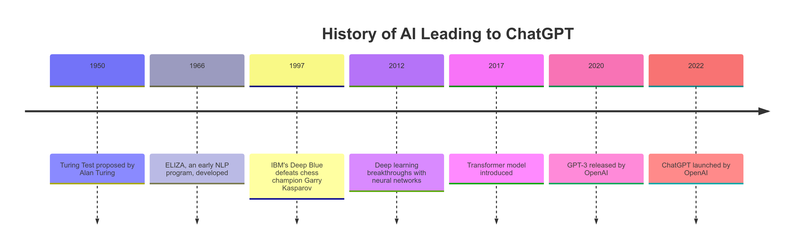
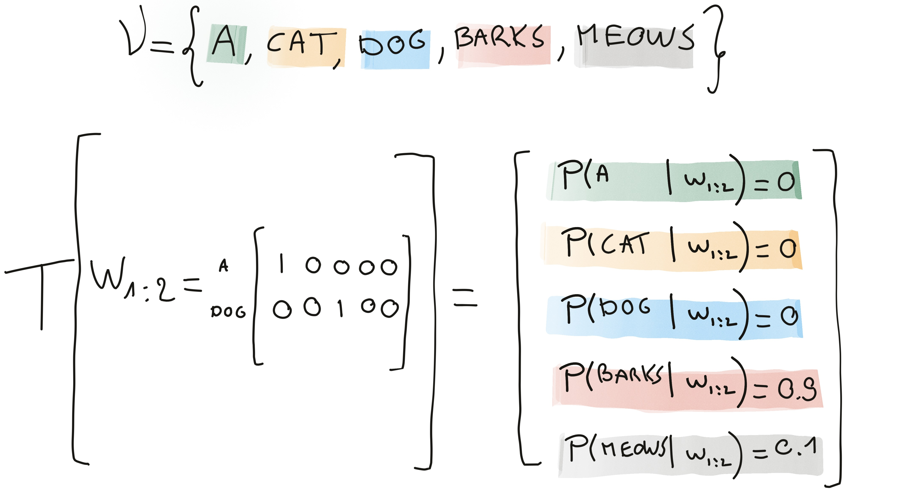
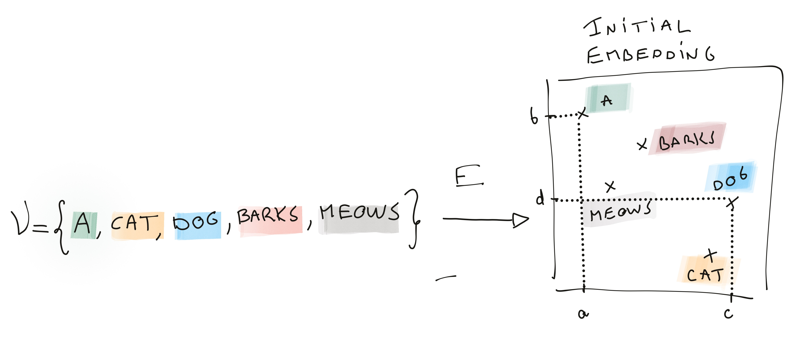
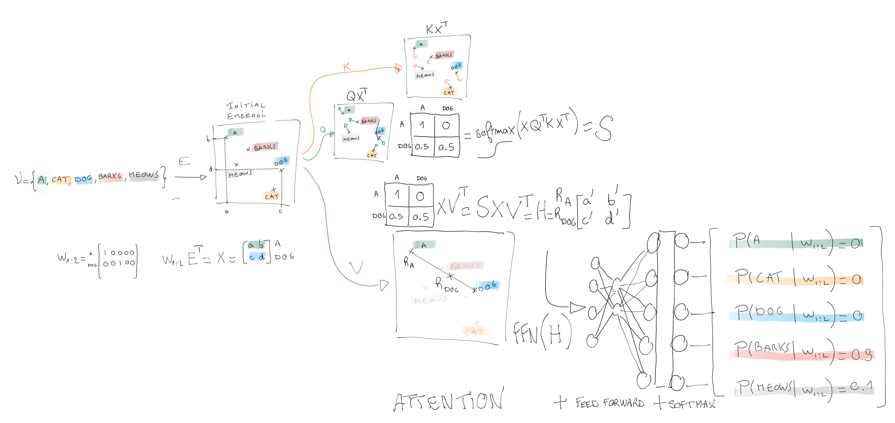
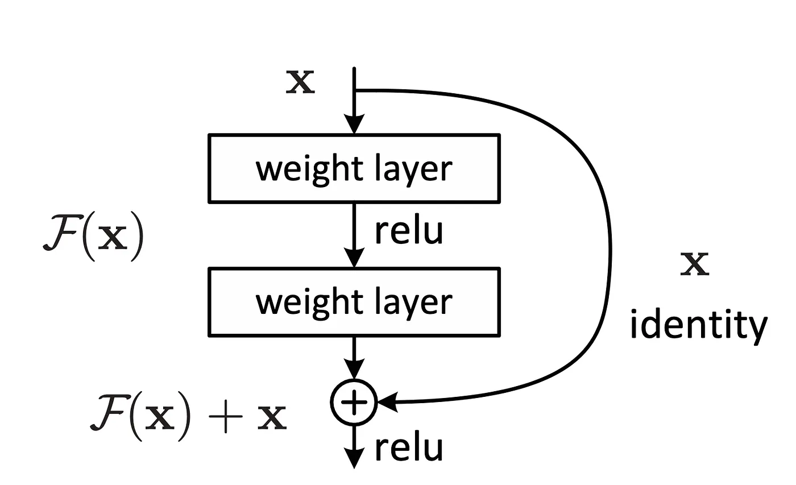
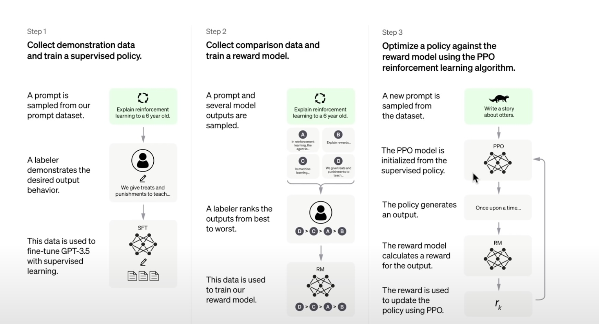

graph TD
A["1950: Turing Test proposed by Alan Turing"]
A --> B["1956: Artificial Intelligence term coined at Dartmouth Conference"]
B --> C["1966: ELIZA, an early NLP program, developed"]
C --> D["1997: IBM's Deep Blue defeats chess champion Garry Kasparov"]
D --> E["2012: Deep learning breakthroughs with neural networks"]
E --> F["2015: OpenAI founded"]
F --> G["2017: Transformer model introduced"]
G --> H["2020: GPT-3 released by OpenAI"]
H --> I["2022: ChatGPT launched by OpenAI"]
4 The nature of transformers
- Deep learning architecture based on attention mechanisms
- Weight the importance of different tokens in a sequence to model long-range dependencies efficiently

4.1 The nature of transformers
A classical transformer is a function \[ T(w_{1:n}) = \begin{bmatrix} p_1 \\ \vdots \\ p_{|V|}\end{bmatrix} \]

- \(\mathcal V\) is a finite set (vocabulary) (Open AI uses 50,000 token as vocabulary)
- \(w_{1:n}\) be a sequence of token, where each \(w_i \in \mathcal V\) (In practice context varies from 1 to n, the blocksize)
- \(p_j\) is the probability of \(w_{(j)}\) the jth token in \(\mathcal V\)
4.1.1 Remarks
- \(w_{1:n}\) is usually coded a matrix of one-hot vectors with \(w_{1:n} \in \mathbb{R}^{n \times |V|}\).
- For classical chatbot \(p_j = P(w_{n+1} = w_{(j)} | w_{1:n})\) where \(w_{(j)}\) is the jthe element of \(\mathcal V\).
4.2 Optimized criteria
Transformers typically optimize different criteria depending on the task they are trained on.
4.2.1 Causal Language Modeling (CLM) / Autoregressive Loss
- Used in: GPT models
- Objective: Predict the next token given the previous tokens
The training set is a set of sequences \((s_j)\) of \(n\) tokens \(s_j=(w_1^j, w_2^j, \dots, w_n^j)\):
\[ L_{CLM} = - \sum_j\sum_{t=1}^n \sum_{c\in V} I\!\!I_{w_t^j=c}\log P(w_t^j=c | w_{1:t-1}^j) \] where \(w_{1:t-1}^j\) denotes the tokens preceding position \(t\) in the sequence \(j\)
The criterion is a kind of pseudo log-likelihood.
If nothing is learned each token has the same probability of appearing: the largest possible value of the criterion is \[ -\log\frac{1}{|V|} \]
4.3 Masked Language Modeling (MLM)
- Used in: BERT models
- Objective: Predict randomly masked tokens in a sentence.
Let \(M_j \subset \{1, \dots, n\}\) be the set of masked positions in the sequence \((s_j)\):
\[ L_{MLM} = - \sum_j \sum_{t \in M_j} \sum_{c\in V} I\!\!I_{w_t^j=c} \log P(w_t^j=c | w^j_{(1:n)\backslash M}) \]
4.4 Conditional Language Modeling / Translation Loss
- Used in: T5, BART
- Objective: Predict an output sequence given an input sequence (e.g., translation, summarization).
Given input sequence \(w^j = (w^j_1, \dots, w^j_n)\) and output sequence \(v^j = (v^j_1, \dots, v^j_m)\):
\[ L_{Seq2Seq} = - \sum_j \sum_{t=1}^m \sum_{c\in V} I\!\!I_{v_t^j=c} \log P(v_m^j=c | v^j_{1:m-1}, w^j_{1:n}) \]
4.4.1 Other losses
Transformers exact objective functions depends on type of considered problems
4.5 Initial embedding
- The token are first embedded in a \(d\) dimensional space (see previous topic)
- the representation \(x_i= E w_i\) is independent of context.
- Let \(X= x_{1:n} = w_{1:n} E^\top \in \mathbb{R}^{n \times d}\).

4.6 A minimal self-attention architecture for decoder
Attention is a communication mecanism between the tokens of a sequence.
Self attention proposes a contextual representation \(h_i\) of \(x_i\) as a linear combination the sequence: \[ h_i =V . \sum_{j=1}^n \alpha_{ij} x_j \]
- \(h_i\) aggregates the past between query (current postion i) and key (other past position j)
- \(\sum_j \alpha_{ij}=1\)
- In decoder the future cannot communicate with the past
- \(\forall j>i, \alpha_{ij}=0\)
- the structure of the attention matrix is thus lower triangular in classical GPT decoder,
- it is not necessary to have a triangular attention matrix (i.e. sentiment analysis)
- \(V\) is learned matrix of parameters and can be seen a projection matrix modifying the embedding of the linear combination of sequence tokens. Let consider V as a square matrix \(d\times d\).
4.7 Attention and matrix notation
- \(\alpha_{ij}=\text{softmax}(x_i^T Q^T K x_j) = \frac{exp(x_i^T Q^T K x_j)}{\sum_{j=1}^n \exp{\left( x_i^T Q^T K x_j \right)}}\), where
- Q is a matrix that modifies the embedding of the token we are looking for. Let consider V as a square matrix \(d\times d\).
- K is a matrix that modifies the embedding of the word we are comparing against. Let consider V as a square matrix \(d\times d\).
- Q is a matrix that modifies the embedding of the token we are looking for. Let consider V as a square matrix \(d\times d\).
4.7.1 Matrix notation
\[ H=\begin{bmatrix} h_1^T \\ \vdots \\ h_n^T \end{bmatrix} = \text{Attention(Q,K,V,X)}= \text{softmax}(X (Q^T K )X^T)X V^T \]
4.7.2 Remark
In the original paper (“Attention is all you need”, 2017) the notation is different and notes:
- \(X Q^T\) as \(Q\),
- \(X K^T\) as \(K\), and
- \(X V^T\) as \(V\)
4.8 Ilustration of self-Attention

4.9 Interpretation of Q, K, V
- The query is modified version of an initial embedding \(q_i = Q x_i\)
- The Key is modified version of an initial embedding \(k_i = K x_i\)
- Value is modified version of an initial embedding \(v_i = V x_i\), which should include contextual information since it is a transformation of a linear combination of the context tokens…
| Attention Concept | Sometimes Similar to |
|---|---|
| Query | Target (What to focus on) |
| Key | Context (What to compare against, the source of information) |
| Value | Contextual embedding |
4.10 Important details
The original paper introduces many add-ons, which much improve the transformers performances:
- Positional encoding for introducing the notion of order in the sequence
- FFN: Feed Forward Neural layer.
- As the attention is a linear operation composed with a softmax, a Feed Forward Neural layer is added for making the function more flexible
- Multi-blocks: In the spirit of Deep learning blocks of attention and FNN are repeated…
- Dropout layers are used for prevenring overfitting (from “Dropout a simple way to prevent NN from overfitting” Hinton)
- Simple trick of Skip connection for stabilizing the gradient (from “Deep learning residuals for image recognition”)
- The deep learning structure tends to cause problems with gradient computation (vanishing or exploding gradient)
- In order to make tokens comparable, they are all normalized at the output of each blocks:
- The classical z-transformed is applied (with Bayesian correction)
- Multi-head attention: computes multiple attention functions (heads) in parallel
4.11 Positional encoding
- Attention do not consider order of tokens !
- Incorporating information about the order of tokens is achieved by adding positional encodings to the input embeddings
The original transformer implementation uses:
- even indices: \[ PE_{\text{pos}, 2i} = \sin\left(\frac{\text{pos}}{10000^{\frac{2i}{d}}}\right) \]
- odd indices: \[ PE_{\text{pos}, 2i+1} = \cos\left(\frac{\text{pos}}{10000^{\frac{2i}{d}}}\right) \]
It ensures that each position is assigned a unique encoding
4.12 Feed Forward Neural Network
- Attention mechanism operates linearly to capture dependencies between tokens in a sequence
- Non-linearity enhance the model’s expressive power
4.12.1 Structure of the FFN:
Each FFN consists of two linear transformations with a non-linear activation function in between:
- First Linear Transformation: embedding of the input from the model’s dimensionality \(d\) to a higher-dimensional space
- Activation Function: A non-linear function is applied to introduce non-linearity
- Second Linear Transformation: projects the output back to the original dimensionality
\[ \text{FFN}(x) = W_2 \cdot \text{ReLU}(W_1 \cdot x + b_1) + b_2 \]
where \(W_1\) and \(W_2\) are weight matrices, and \(b_1\) and \(b_2\) are bias vectors.
4.13 Skip connection (original paper “Deep Residual Learning for Image Recognition” 2015 by He et al.)

Skip connections address the vanishing (and exploding) gradient problems
Consider a neural network layer with an input \(x\) and a desired underlying function \(H(x)\).
Incorporating a skip connection, the layer is restructured to model a residual \(F(x)= H(x)- x\). Thus, the output of this layer becomes:
\[ y = F(x) + x \]
4.13.1 Benefits:
- Enhanced Gradient Flow
- Faster convergence and higher accuracy
4.14 Multi-head attention
- Multi-Head Attention captures various aspects of the data.
- The mechanism computes multiple attention functions (heads) in parallel.
- Each head operates on linearly projected versions of the queries, keys, and values
Each head \(k\) computes the attention scores \[ \text{Attention}(Q_k, K_k, V_k) = \text{softmax}\left(\frac{XQ_k^T K_kX}{\sqrt{d_k}}\right)X V_k^T \] where \(d_k\) is the dimension of the key vectors
4.14.1 Concatenation
The outputs of all heads are concatenated and projected through a final linear layer: \[ \text{MultiHead}(Q, K, V) = \text{Concat}(\text{head}_1, \ldots, \text{head}_h) P \] The multi head matrix is \(d \times d\), where - \(h\) is the number of head, - \(d_k= d/h\) the size of the projection space of head k - \(P\) is a projection matrix combining the heads.
4.14.2 Benefits
- Diverse Representations: Each head can capture different features or relationships within the data, enabling the model to understand various aspects of the input (grammar, style, “meaning”…).
- Parallel Processing: Multiple heads allow the model to process different parts of the sequence simultaneously, improving efficiency.
- Enhanced Capacity: By attending to information from different subspaces, the model can capture complex patterns and dependencies.
4.15 Fine tuning
After a pretraining step that ressembles closely to a decoder…
